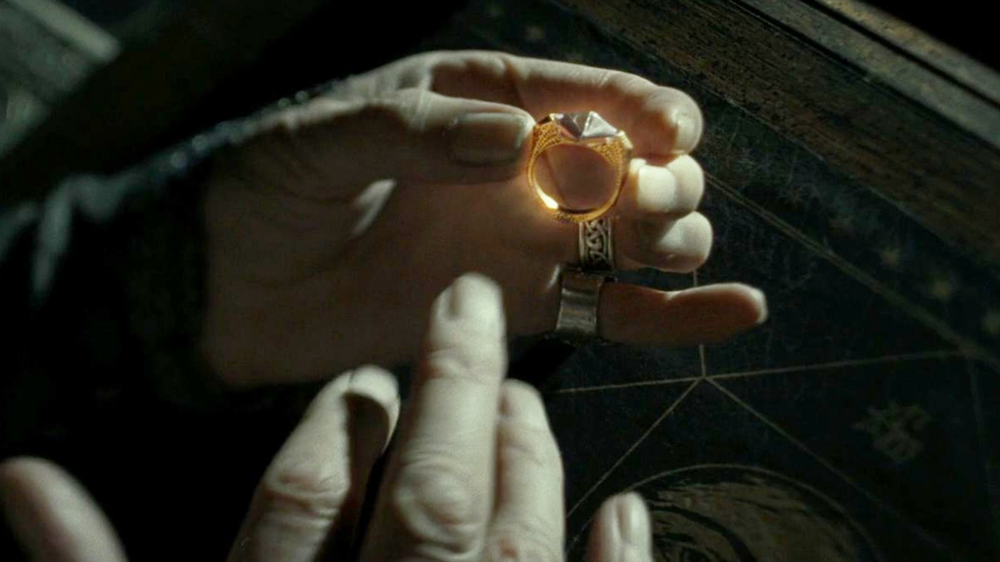
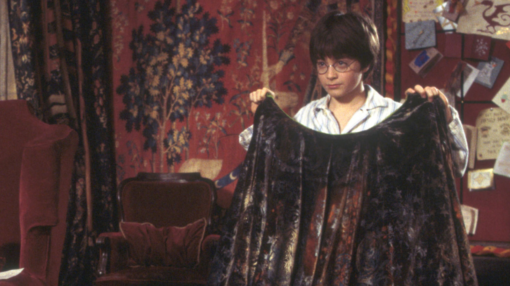

Published September 20, 2026
For centuries, witches and wizards have searched for magical artifacts whose powers blur the line between myth and reality. Among the most legendary are the Deathly Hallows, three extraordinary objects said to grant their owner mastery over death itself. Though many believe them to be mere fairy tales, historians continue to uncover clues that suggest otherwise.
The Elder Wand is regarded as the most powerful wand ever created. It is said to make its true master nearly unbeatable in combat. Throughout history, many famous witches and wizards sought its power, often meeting tragic ends in their pursuit.

The Resurrection Stone is surrounded by mystery and legend. Ancient stories claim that it allows its holder to communicate with loved ones who have passed away, though scholars debate whether these encounters are real or simply powerful magical illusions.

Unlike ordinary invisibility cloaks that lose their enchantment over time, the legendary Invisibility Cloak is believed to conceal its wearer perfectly forever. It remains one of the most treasured magical relics ever recorded.
While the truth behind these mysterious artifacts may never be fully known, they continue to inspire generations of magical historians, adventurers, and Hogwarts students eager to uncover the secrets of the wizarding world.
Return to Daily Prophet